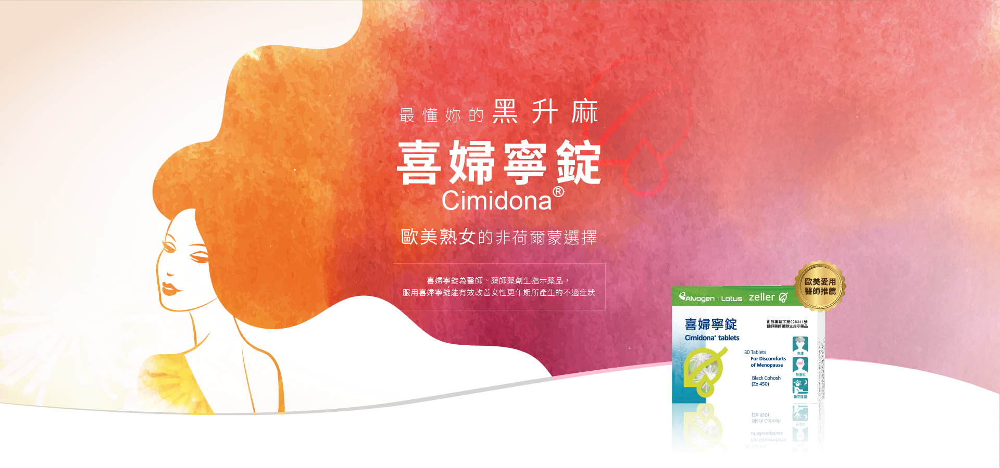
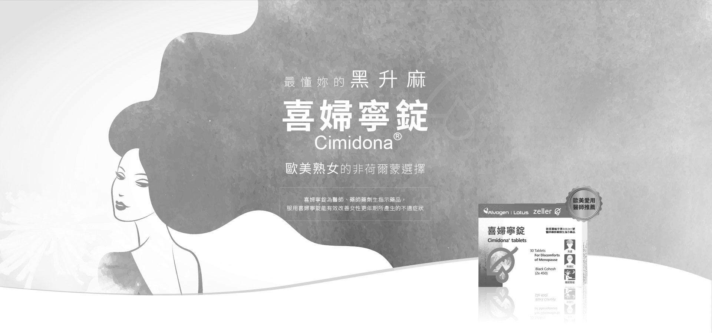
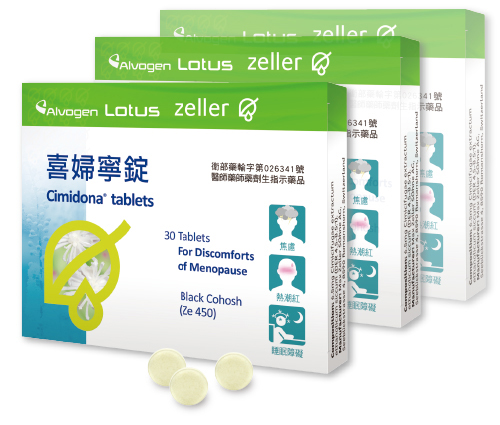
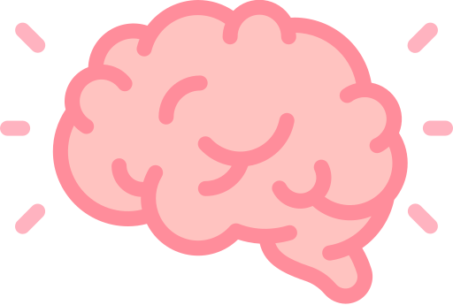
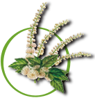

喜婦寧錠
選擇比一比
自我評估表
諮詢


喜婦寧錠Cimidona
®
有效成分及含量
每一錠劑內含有6.5 mg每一顆錠劑內含有6.5 mg Native Black cohosh dry extract (北美升麻根莖部之乾燥萃取物)。
用法用量
一天服用一顆，並配水吞服，不可咬碎或咀嚼。 若要服用超過6個月，您應該諮詢您的醫生。 請依照說明書上的建議劑量或醫生指示。

醫學中心婦產專科醫師
張宇琪
台灣醫學中心 婦產專科醫師推薦
多元化治療 黑升麻改善症狀
Cimidona® 在2005年上市，是一種非荷爾蒙的更年期輔助療法，有效成分北美植物黑升麻萃取物，對於更年期女性的身心幫助很大。病患普遍在一周後的自我評估數據中就反映出緩解幅度！
歐美醫師愛用推薦
歐洲草本配方 非賀爾蒙製劑唯一選擇
瑞士草藥大廠
原廠進口
天然植物成分
溫和不刺激
安全
非荷爾蒙成分

中樞系統
獨特作用方式
症狀緩解
熱潮紅、出汗、睡眠障礙、 焦躁以及憂鬱

藥品級黑升麻
獨特作用機轉不具雌激素作用可安全使用於
一般婦女
有效緩解更年期複合症狀
有子宮肌瘤的婦女
避免子宮肌瘤體積增加
婦癌相關敏感婦女
避免受到雌激素刺激
全台各大醫學中心使用
婦產科 / 乳房外科 / 精神科
市立聯合醫院、臺北市立萬芳醫院、馬偕紀念醫院、奇美醫療財團法人奇美醫院、高雄長庚紀念醫院、高雄榮民總醫院
熟齡是女性人生必經的一個階段。有些女性的更年期症狀非常嚴重，影響日常生活、睡眠品質、工作效率，或是人際關係！衛生署統計：
症狀持續5年的女性
約有
56
%
症狀超過5年的女性
約有
26
%
熟齡女性
選擇比一比
項目
成分
效果
禁忌
療程
傳統補充療法
成分
荷爾蒙製劑
效果
口服或局部外用
能有效緩解症狀
禁忌
對荷爾蒙敏感者
療程
$900
植物性保健品
(大豆、紅花苜蓿)
成分
荷爾蒙製劑
效果
療程未能證實
禁忌
對荷爾蒙敏感者
療程
$2000
非荷爾蒙天然療法
(黑升麻)
成分
非荷爾蒙製劑
效果
口服：適用各族群、安全性高能溫和緩解症狀
禁忌
對植物成分敏感者
療程
$800-1600
抗憂鬱劑
成分
非荷爾蒙製劑
效果
Off-label Use
禁忌
無針對非憂鬱症患者使用抗憂鬱劑的長期資料
療程
N/A
更年期評估量表MRS
血管舒縮
01．熱潮紅、冒汗（陣陣冒汗）
02．心臟不適（心悸、心律不整、心絞痛症狀）
03．睡眠問題（難以入睡、難以安睡、早早醒來）
心理
04．憂鬱情緒（感到低落、悲傷、快要流淚、缺乏動力、情緒波動）
05．易怒（感到緊張不安、內在壓力、想要打人）
06．焦慮（內心煩亂、感到恐懼）
07．身心疲憊（能力表現普遍降低、記憶力減退、注意力降低、健忘）
08．性交問題（性慾、性生活及性滿意度改變）
生殖系統
09．膀胱問題（排尿困難、排尿需求增加、膀胱失禁）
10．陰道乾澀（陰道乾澀感或灼熱感、性交困難）
11．關節與肌肉不適（關節疼痛、類風濕症狀）
藉由評估表了解一下自己的狀況
針對這11種症狀，分別給予0(無) 4(極嚴重)的評分，然後計算總分：
0~5 無／很少抱怨
6~9 輕度
10~16 中度
17~44 重度
請洽全省各大連鎖藥局及獨立藥局
諮詢專線
0800-025-188
台北市信義區松仁路277號17樓
service.lotuspharm@gmail.com
衛部藥輸字第026341號
北市衛藥廣字第110060120號
0800-025-188
X
隱私權政策
非常歡迎您光臨「美時化學製藥股份有限公司網站」（以下簡稱本網站），為了讓您能夠安心使用本網站的各項服務與資訊，特此向您說明本網站的隱私權保護政策，以保障您的權益，請您詳閱下列內容：
一、隱私權保護政策的適用範圍
隱私權保護政策內容，包括本網站如何處理在您使用網站服務時收集到的個人識別資料。隱私權保護政策不適用於本網站以外的相關連結網站，也不適用於非本網站所委託或參與管理的人員。任何非經合法授權使用本網站之行為均可能使您遭致刑事起訴或罰款制裁。
用戶同意接受本「使用條款」：也就是說當您進入並使用本網站，即視同您已同意遵守本「使用條款」與其他有關著作權、版權、商標專用權、網路智慧財產權、隱私權等之法律規定。
用戶須遵守之規則：電腦系統與網路通訊相關資源，包括所有電腦設備、週邊系統、伺服器、所有連接之網路、及資料、資訊、相片、圖像、圖表、程式、與相關之儲存媒體如磁碟、硬碟、光碟、記憶卡等在內之網站內容之著作權及一切專屬權利均屬於本網站的財產；用戶進入並使用系統及資訊時，應遵守規定。
美時化學製藥股份有限公司官方網站存用、顯示之資料與內容，包括企業形象標誌、logo商標、服務章程等一切智慧財產權皆屬於「美時化學製藥股份有限公司官方網站」的財產；用戶未經授權不得企圖使用、存取、或使用儲存於美時化學製藥股份有限公司官方網站系統之資料或程式；亦不得傳播、複製、修改、發佈或傳送。
二、個人資料的蒐集、處理及利用方式
當您造訪本網站或使用本網站所提供之功能服務時，我們將視該服務功能性質，請您提供必要的個人資料，並在該特定目的範圍內處理及利用您的個人資料；非經您書面同意，本網站不會將個人資料用於其他用途。
本網站在您使用服務信箱、問卷調查等互動性功能時，會保留您所提供的姓名、電子郵件地址、聯絡方式及使用時間等。
於一般瀏覽時，伺服器會自行記錄相關行徑，包括您使用連線設備的IP位址、使用時間、使用的瀏覽器、瀏覽及點選資料記錄等，做為我們增進網站服務的參考依據，此記錄為內部應用，決不對外公佈。
為提供精確的服務，我們會將收集的問卷調查內容進行統計與分析，分析結果之統計數據或說明文字呈現，除供內部研究外，我們會視需要公佈統計數據及說明文字，但不涉及特定個人之資料。
三、資料之保護
本網站主機均設有防火牆、防毒系統等相關的各項資訊安全設備及必要的安全防護措施，加以保護網站及您的個人資料採用嚴格的保護措施，只由經過授權的人員才能接觸您的個人資料，相關處理人員皆簽有保密合約，如有違反保密義務者，將會受到相關的法律處分。
如因業務需要有必要委託其他單位提供服務時，本網站亦會嚴格要求其遵守保密義務，並且採取必要檢查程序以確定其將確實遵守。
四、網站對外的相關連結
本網站的網頁提供其他網站的網路連結，您也可經由本網站所提供的連結，點選進入其他網站。但該連結網站不適用本網站的隱私權保護政策，您必須參考該連結網站中的隱私權保護政策。
五、與第三人共用個人資料之政策
本網站絕不會提供、交換、出租或出售任何您的個人資料給其他個人、團體、私人企業或公務機關，但有法律依據或合約義務者，不在此限。
六、Cookie之使用
為了提供您最佳的服務，本網站會在您的電腦中放置並取用我們的Cookie，若您不願接受Cookie的寫入，您可在您使用的瀏覽器功能項中設定隱私權等級為高，即可拒絕Cookie的寫入，但可能會導至網站某些功能無法正常執行 。
七、隱私權保護政策之修正
本網站隱私權保護政策將因應需求隨時進行修正，修正後的條款將刊登於網站上。
 天然植物成分
天然植物成分